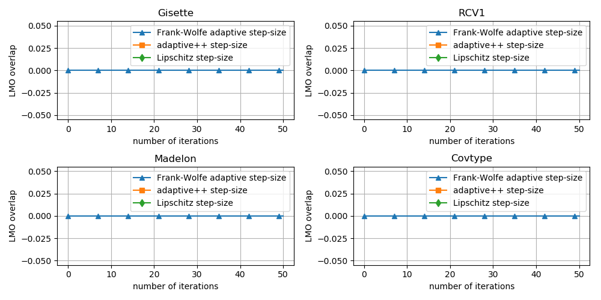

Note
Click here to download the full example code
Update Direction Overlap in Frank-Wolfe¶
This example quantifies how many times the Frank-Wolfe algorithm selects the same extremal vertex (which will determine the update direction) twice in a row. Selecting the same vertex twice in a row is symptomatic of a poor step-size, as it implies that the last two updates could have been replaced by a single update with larger step-size.
Out:
Running on the Gisette dataset
Running Frank-Wolfe adaptive step-size variant
0%| | 0/50 [00:00<?, ?it/s]
0%| | 0/50 [00:00<?, ?it/s, L_t=842, iter=0, tol=778]
2%|2 | 1/50 [00:00<00:05, 8.81it/s, L_t=842, iter=0, tol=778]
2%|2 | 1/50 [00:00<00:05, 8.81it/s, L_t=841, iter=1, tol=778]
2%|2 | 1/50 [00:00<00:05, 8.81it/s, L_t=840, iter=2, tol=778]
6%|6 | 3/50 [00:00<00:04, 10.36it/s, L_t=840, iter=2, tol=778]
6%|6 | 3/50 [00:00<00:04, 10.36it/s, L_t=840, iter=3, tol=777]
6%|6 | 3/50 [00:00<00:04, 10.36it/s, L_t=839, iter=4, tol=777]
10%|# | 5/50 [00:00<00:03, 11.78it/s, L_t=839, iter=4, tol=777]
10%|# | 5/50 [00:00<00:03, 11.78it/s, L_t=838, iter=5, tol=777]
10%|# | 5/50 [00:00<00:03, 11.78it/s, L_t=837, iter=6, tol=777]
14%|#4 | 7/50 [00:00<00:03, 13.06it/s, L_t=837, iter=6, tol=777]
14%|#4 | 7/50 [00:00<00:03, 13.06it/s, L_t=836, iter=7, tol=777]
14%|#4 | 7/50 [00:00<00:03, 13.06it/s, L_t=835, iter=8, tol=776]
18%|#8 | 9/50 [00:00<00:02, 14.13it/s, L_t=835, iter=8, tol=776]
18%|#8 | 9/50 [00:00<00:02, 14.13it/s, L_t=834, iter=9, tol=776]
18%|#8 | 9/50 [00:00<00:02, 14.13it/s, L_t=834, iter=10, tol=776]
22%|##2 | 11/50 [00:00<00:02, 15.00it/s, L_t=834, iter=10, tol=776]
22%|##2 | 11/50 [00:00<00:02, 15.00it/s, L_t=833, iter=11, tol=776]
22%|##2 | 11/50 [00:00<00:02, 15.00it/s, L_t=832, iter=12, tol=775]
26%|##6 | 13/50 [00:00<00:02, 15.68it/s, L_t=832, iter=12, tol=775]
26%|##6 | 13/50 [00:00<00:02, 15.68it/s, L_t=831, iter=13, tol=775]
26%|##6 | 13/50 [00:00<00:02, 15.68it/s, L_t=830, iter=14, tol=775]
30%|### | 15/50 [00:00<00:02, 15.94it/s, L_t=830, iter=14, tol=775]
30%|### | 15/50 [00:00<00:02, 15.94it/s, L_t=829, iter=15, tol=775]
30%|### | 15/50 [00:01<00:02, 15.94it/s, L_t=829, iter=16, tol=775]
34%|###4 | 17/50 [00:01<00:02, 16.38it/s, L_t=829, iter=16, tol=775]
34%|###4 | 17/50 [00:01<00:02, 16.38it/s, L_t=828, iter=17, tol=774]
34%|###4 | 17/50 [00:01<00:02, 16.38it/s, L_t=827, iter=18, tol=774]
38%|###8 | 19/50 [00:01<00:01, 16.71it/s, L_t=827, iter=18, tol=774]
38%|###8 | 19/50 [00:01<00:01, 16.71it/s, L_t=826, iter=19, tol=774]
38%|###8 | 19/50 [00:01<00:01, 16.71it/s, L_t=825, iter=20, tol=774]
42%|####2 | 21/50 [00:01<00:01, 16.95it/s, L_t=825, iter=20, tol=774]
42%|####2 | 21/50 [00:01<00:01, 16.95it/s, L_t=825, iter=21, tol=774]
42%|####2 | 21/50 [00:01<00:01, 16.95it/s, L_t=824, iter=22, tol=773]
46%|####6 | 23/50 [00:01<00:01, 17.02it/s, L_t=824, iter=22, tol=773]
46%|####6 | 23/50 [00:01<00:01, 17.02it/s, L_t=823, iter=23, tol=773]
46%|####6 | 23/50 [00:01<00:01, 17.02it/s, L_t=822, iter=24, tol=773]
50%|##### | 25/50 [00:01<00:01, 17.13it/s, L_t=822, iter=24, tol=773]
50%|##### | 25/50 [00:01<00:01, 17.13it/s, L_t=821, iter=25, tol=773]
50%|##### | 25/50 [00:01<00:01, 17.13it/s, L_t=820, iter=26, tol=773]
54%|#####4 | 27/50 [00:01<00:01, 17.25it/s, L_t=820, iter=26, tol=773]
54%|#####4 | 27/50 [00:01<00:01, 17.25it/s, L_t=820, iter=27, tol=772]
54%|#####4 | 27/50 [00:01<00:01, 17.25it/s, L_t=819, iter=28, tol=772]
58%|#####8 | 29/50 [00:01<00:01, 17.29it/s, L_t=819, iter=28, tol=772]
58%|#####8 | 29/50 [00:01<00:01, 17.29it/s, L_t=818, iter=29, tol=772]
58%|#####8 | 29/50 [00:01<00:01, 17.29it/s, L_t=817, iter=30, tol=772]
62%|######2 | 31/50 [00:01<00:01, 17.35it/s, L_t=817, iter=30, tol=772]
62%|######2 | 31/50 [00:01<00:01, 17.35it/s, L_t=816, iter=31, tol=772]
62%|######2 | 31/50 [00:01<00:01, 17.35it/s, L_t=815, iter=32, tol=771]
66%|######6 | 33/50 [00:01<00:00, 17.35it/s, L_t=815, iter=32, tol=771]
66%|######6 | 33/50 [00:02<00:00, 17.35it/s, L_t=815, iter=33, tol=771]
66%|######6 | 33/50 [00:02<00:00, 17.35it/s, L_t=814, iter=34, tol=771]
70%|####### | 35/50 [00:02<00:00, 17.42it/s, L_t=814, iter=34, tol=771]
70%|####### | 35/50 [00:02<00:00, 17.42it/s, L_t=813, iter=35, tol=771]
70%|####### | 35/50 [00:02<00:00, 17.42it/s, L_t=812, iter=36, tol=771]
74%|#######4 | 37/50 [00:02<00:00, 17.41it/s, L_t=812, iter=36, tol=771]
74%|#######4 | 37/50 [00:02<00:00, 17.41it/s, L_t=811, iter=37, tol=770]
74%|#######4 | 37/50 [00:02<00:00, 17.41it/s, L_t=811, iter=38, tol=770]
78%|#######8 | 39/50 [00:02<00:00, 17.46it/s, L_t=811, iter=38, tol=770]
78%|#######8 | 39/50 [00:02<00:00, 17.46it/s, L_t=810, iter=39, tol=770]
78%|#######8 | 39/50 [00:02<00:00, 17.46it/s, L_t=809, iter=40, tol=770]
82%|########2 | 41/50 [00:02<00:00, 17.51it/s, L_t=809, iter=40, tol=770]
82%|########2 | 41/50 [00:02<00:00, 17.51it/s, L_t=808, iter=41, tol=769]
82%|########2 | 41/50 [00:02<00:00, 17.51it/s, L_t=807, iter=42, tol=769]
86%|########6 | 43/50 [00:02<00:00, 17.48it/s, L_t=807, iter=42, tol=769]
86%|########6 | 43/50 [00:02<00:00, 17.48it/s, L_t=807, iter=43, tol=769]
86%|########6 | 43/50 [00:02<00:00, 17.48it/s, L_t=806, iter=44, tol=769]
90%|######### | 45/50 [00:02<00:00, 17.50it/s, L_t=806, iter=44, tol=769]
90%|######### | 45/50 [00:02<00:00, 17.50it/s, L_t=805, iter=45, tol=769]
90%|######### | 45/50 [00:02<00:00, 17.50it/s, L_t=804, iter=46, tol=768]
94%|#########3| 47/50 [00:02<00:00, 17.46it/s, L_t=804, iter=46, tol=768]
94%|#########3| 47/50 [00:02<00:00, 17.46it/s, L_t=803, iter=47, tol=768]
94%|#########3| 47/50 [00:02<00:00, 17.46it/s, L_t=803, iter=48, tol=768]
98%|#########8| 49/50 [00:02<00:00, 17.46it/s, L_t=803, iter=48, tol=768]
98%|#########8| 49/50 [00:02<00:00, 17.46it/s, L_t=802, iter=49, tol=768]
100%|##########| 50/50 [00:02<00:00, 17.09it/s, L_t=802, iter=49, tol=768]
Running adaptive++ step-size variant
Running Lipschitz step-size variant
Running on the RCV1 dataset
Running Frank-Wolfe adaptive step-size variant
0%| | 0/50 [00:00<?, ?it/s]
0%| | 0/50 [00:00<?, ?it/s, L_t=0.00607, iter=0, tol=176]
2%|2 | 1/50 [00:00<00:27, 1.77it/s, L_t=0.00607, iter=0, tol=176]
2%|2 | 1/50 [00:00<00:27, 1.77it/s, L_t=0.00607, iter=1, tol=159]
4%|4 | 2/50 [00:00<00:23, 2.05it/s, L_t=0.00607, iter=1, tol=159]
4%|4 | 2/50 [00:01<00:23, 2.05it/s, L_t=0.00606, iter=2, tol=144]
6%|6 | 3/50 [00:01<00:20, 2.33it/s, L_t=0.00606, iter=2, tol=144]
6%|6 | 3/50 [00:01<00:20, 2.33it/s, L_t=0.00606, iter=3, tol=131]
8%|8 | 4/50 [00:01<00:18, 2.55it/s, L_t=0.00606, iter=3, tol=131]
8%|8 | 4/50 [00:01<00:18, 2.55it/s, L_t=0.00605, iter=4, tol=119]
10%|# | 5/50 [00:01<00:16, 2.76it/s, L_t=0.00605, iter=4, tol=119]
10%|# | 5/50 [00:02<00:16, 2.76it/s, L_t=0.00604, iter=5, tol=115]
12%|#2 | 6/50 [00:02<00:15, 2.91it/s, L_t=0.00604, iter=5, tol=115]
12%|#2 | 6/50 [00:02<00:15, 2.91it/s, L_t=0.00604, iter=6, tol=111]
14%|#4 | 7/50 [00:02<00:14, 3.03it/s, L_t=0.00604, iter=6, tol=111]
14%|#4 | 7/50 [00:02<00:14, 3.03it/s, L_t=0.00603, iter=7, tol=108]
16%|#6 | 8/50 [00:02<00:13, 3.12it/s, L_t=0.00603, iter=7, tol=108]
16%|#6 | 8/50 [00:02<00:13, 3.12it/s, L_t=0.00603, iter=8, tol=105]
18%|#8 | 9/50 [00:02<00:12, 3.18it/s, L_t=0.00603, iter=8, tol=105]
18%|#8 | 9/50 [00:03<00:12, 3.18it/s, L_t=0.00602, iter=9, tol=101]
20%|## | 10/50 [00:03<00:12, 3.22it/s, L_t=0.00602, iter=9, tol=101]
20%|## | 10/50 [00:03<00:12, 3.22it/s, L_t=0.00601, iter=10, tol=100]
22%|##2 | 11/50 [00:03<00:11, 3.26it/s, L_t=0.00601, iter=10, tol=100]
22%|##2 | 11/50 [00:03<00:11, 3.26it/s, L_t=0.00601, iter=11, tol=96.7]
24%|##4 | 12/50 [00:03<00:11, 3.26it/s, L_t=0.00601, iter=11, tol=96.7]
24%|##4 | 12/50 [00:04<00:11, 3.26it/s, L_t=0.006, iter=12, tol=93.4]
26%|##6 | 13/50 [00:04<00:11, 3.26it/s, L_t=0.006, iter=12, tol=93.4]
26%|##6 | 13/50 [00:04<00:11, 3.26it/s, L_t=0.006, iter=13, tol=90.5]
28%|##8 | 14/50 [00:04<00:11, 3.27it/s, L_t=0.006, iter=13, tol=90.5]
28%|##8 | 14/50 [00:04<00:11, 3.27it/s, L_t=0.00599, iter=14, tol=89.4]
30%|### | 15/50 [00:04<00:10, 3.28it/s, L_t=0.00599, iter=14, tol=89.4]
30%|### | 15/50 [00:05<00:10, 3.28it/s, L_t=0.00598, iter=15, tol=86.4]
32%|###2 | 16/50 [00:05<00:10, 3.28it/s, L_t=0.00598, iter=15, tol=86.4]
32%|###2 | 16/50 [00:05<00:10, 3.28it/s, L_t=0.00598, iter=16, tol=83.6]
34%|###4 | 17/50 [00:05<00:10, 3.29it/s, L_t=0.00598, iter=16, tol=83.6]
34%|###4 | 17/50 [00:05<00:10, 3.29it/s, L_t=0.00597, iter=17, tol=81.8]
36%|###6 | 18/50 [00:05<00:09, 3.28it/s, L_t=0.00597, iter=17, tol=81.8]
36%|###6 | 18/50 [00:05<00:09, 3.28it/s, L_t=0.00597, iter=18, tol=81.9]
38%|###8 | 19/50 [00:05<00:09, 3.27it/s, L_t=0.00597, iter=18, tol=81.9]
38%|###8 | 19/50 [00:06<00:09, 3.27it/s, L_t=0.00596, iter=19, tol=80.7]
40%|#### | 20/50 [00:06<00:09, 3.28it/s, L_t=0.00596, iter=19, tol=80.7]
40%|#### | 20/50 [00:06<00:09, 3.28it/s, L_t=0.00595, iter=20, tol=79.2]
42%|####2 | 21/50 [00:06<00:08, 3.29it/s, L_t=0.00595, iter=20, tol=79.2]
42%|####2 | 21/50 [00:06<00:08, 3.29it/s, L_t=0.00595, iter=21, tol=78.6]
44%|####4 | 22/50 [00:06<00:08, 3.30it/s, L_t=0.00595, iter=21, tol=78.6]
44%|####4 | 22/50 [00:07<00:08, 3.30it/s, L_t=0.00594, iter=22, tol=76.6]
46%|####6 | 23/50 [00:07<00:08, 3.30it/s, L_t=0.00594, iter=22, tol=76.6]
46%|####6 | 23/50 [00:07<00:08, 3.30it/s, L_t=0.00594, iter=23, tol=77.7]
48%|####8 | 24/50 [00:07<00:07, 3.30it/s, L_t=0.00594, iter=23, tol=77.7]
48%|####8 | 24/50 [00:07<00:07, 3.30it/s, L_t=0.00593, iter=24, tol=75.2]
50%|##### | 25/50 [00:07<00:07, 3.31it/s, L_t=0.00593, iter=24, tol=75.2]
50%|##### | 25/50 [00:08<00:07, 3.31it/s, L_t=0.00592, iter=25, tol=75]
52%|#####2 | 26/50 [00:08<00:07, 3.31it/s, L_t=0.00592, iter=25, tol=75]
52%|#####2 | 26/50 [00:08<00:07, 3.31it/s, L_t=0.00592, iter=26, tol=73.4]
54%|#####4 | 27/50 [00:08<00:06, 3.30it/s, L_t=0.00592, iter=26, tol=73.4]
54%|#####4 | 27/50 [00:08<00:06, 3.30it/s, L_t=0.00591, iter=27, tol=72.4]
56%|#####6 | 28/50 [00:08<00:06, 3.27it/s, L_t=0.00591, iter=27, tol=72.4]
56%|#####6 | 28/50 [00:09<00:06, 3.27it/s, L_t=0.00591, iter=28, tol=72.5]
58%|#####8 | 29/50 [00:09<00:06, 3.12it/s, L_t=0.00591, iter=28, tol=72.5]
58%|#####8 | 29/50 [00:09<00:06, 3.12it/s, L_t=0.0059, iter=29, tol=71]
60%|###### | 30/50 [00:09<00:06, 3.15it/s, L_t=0.0059, iter=29, tol=71]
60%|###### | 30/50 [00:09<00:06, 3.15it/s, L_t=0.00589, iter=30, tol=70.1]
62%|######2 | 31/50 [00:09<00:05, 3.23it/s, L_t=0.00589, iter=30, tol=70.1]
62%|######2 | 31/50 [00:09<00:05, 3.23it/s, L_t=0.00589, iter=31, tol=69.9]
64%|######4 | 32/50 [00:09<00:05, 3.22it/s, L_t=0.00589, iter=31, tol=69.9]
64%|######4 | 32/50 [00:10<00:05, 3.22it/s, L_t=0.00588, iter=32, tol=68.4]
66%|######6 | 33/50 [00:10<00:05, 3.16it/s, L_t=0.00588, iter=32, tol=68.4]
66%|######6 | 33/50 [00:10<00:05, 3.16it/s, L_t=0.00588, iter=33, tol=68.5]
68%|######8 | 34/50 [00:10<00:05, 3.18it/s, L_t=0.00588, iter=33, tol=68.5]
68%|######8 | 34/50 [00:10<00:05, 3.18it/s, L_t=0.00587, iter=34, tol=67.1]
70%|####### | 35/50 [00:10<00:04, 3.20it/s, L_t=0.00587, iter=34, tol=67.1]
70%|####### | 35/50 [00:11<00:04, 3.20it/s, L_t=0.00587, iter=35, tol=66.4]
72%|#######2 | 36/50 [00:11<00:04, 3.28it/s, L_t=0.00587, iter=35, tol=66.4]
72%|#######2 | 36/50 [00:11<00:04, 3.28it/s, L_t=0.00586, iter=36, tol=66.3]
74%|#######4 | 37/50 [00:11<00:03, 3.25it/s, L_t=0.00586, iter=36, tol=66.3]
74%|#######4 | 37/50 [00:11<00:03, 3.25it/s, L_t=0.00585, iter=37, tol=64.4]
76%|#######6 | 38/50 [00:11<00:03, 3.26it/s, L_t=0.00585, iter=37, tol=64.4]
76%|#######6 | 38/50 [00:12<00:03, 3.26it/s, L_t=0.00585, iter=38, tol=64.5]
78%|#######8 | 39/50 [00:12<00:03, 3.24it/s, L_t=0.00585, iter=38, tol=64.5]
78%|#######8 | 39/50 [00:12<00:03, 3.24it/s, L_t=0.00584, iter=39, tol=64.1]
80%|######## | 40/50 [00:12<00:03, 3.25it/s, L_t=0.00584, iter=39, tol=64.1]
80%|######## | 40/50 [00:12<00:03, 3.25it/s, L_t=0.00584, iter=40, tol=62.9]
82%|########2 | 41/50 [00:12<00:02, 3.27it/s, L_t=0.00584, iter=40, tol=62.9]
82%|########2 | 41/50 [00:13<00:02, 3.27it/s, L_t=0.00583, iter=41, tol=63.2]
84%|########4 | 42/50 [00:13<00:02, 3.27it/s, L_t=0.00583, iter=41, tol=63.2]
84%|########4 | 42/50 [00:13<00:02, 3.27it/s, L_t=0.00582, iter=42, tol=62.2]
86%|########6 | 43/50 [00:13<00:02, 3.30it/s, L_t=0.00582, iter=42, tol=62.2]
86%|########6 | 43/50 [00:13<00:02, 3.30it/s, L_t=0.00582, iter=43, tol=61.9]
88%|########8 | 44/50 [00:13<00:01, 3.26it/s, L_t=0.00582, iter=43, tol=61.9]
88%|########8 | 44/50 [00:13<00:01, 3.26it/s, L_t=0.00581, iter=44, tol=61.7]
90%|######### | 45/50 [00:13<00:01, 3.25it/s, L_t=0.00581, iter=44, tol=61.7]
90%|######### | 45/50 [00:14<00:01, 3.25it/s, L_t=0.00581, iter=45, tol=60.6]
92%|#########2| 46/50 [00:14<00:01, 3.26it/s, L_t=0.00581, iter=45, tol=60.6]
92%|#########2| 46/50 [00:14<00:01, 3.26it/s, L_t=0.0058, iter=46, tol=60.1]
94%|#########3| 47/50 [00:14<00:00, 3.25it/s, L_t=0.0058, iter=46, tol=60.1]
94%|#########3| 47/50 [00:14<00:00, 3.25it/s, L_t=0.0058, iter=47, tol=60]
96%|#########6| 48/50 [00:14<00:00, 3.23it/s, L_t=0.0058, iter=47, tol=60]
96%|#########6| 48/50 [00:15<00:00, 3.23it/s, L_t=0.00579, iter=48, tol=59.8]
98%|#########8| 49/50 [00:15<00:00, 3.23it/s, L_t=0.00579, iter=48, tol=59.8]
98%|#########8| 49/50 [00:15<00:00, 3.23it/s, L_t=0.00578, iter=49, tol=59]
100%|##########| 50/50 [00:15<00:00, 3.24it/s, L_t=0.00578, iter=49, tol=59]
Running adaptive++ step-size variant
Running Lipschitz step-size variant
Running on the Madelon dataset
Running Frank-Wolfe adaptive step-size variant
0%| | 0/50 [00:00<?, ?it/s]
0%| | 0/50 [00:00<?, ?it/s, L_t=2.98e+7, iter=0, tol=2.09e+3]
0%| | 0/50 [00:00<?, ?it/s, L_t=2.97e+7, iter=1, tol=2.08e+3]
0%| | 0/50 [00:00<?, ?it/s, L_t=2.97e+7, iter=2, tol=2.08e+3]
0%| | 0/50 [00:00<?, ?it/s, L_t=2.97e+7, iter=3, tol=2.08e+3]
0%| | 0/50 [00:00<?, ?it/s, L_t=2.96e+7, iter=4, tol=2.08e+3]
0%| | 0/50 [00:00<?, ?it/s, L_t=2.96e+7, iter=5, tol=2.08e+3]
0%| | 0/50 [00:00<?, ?it/s, L_t=2.96e+7, iter=6, tol=2.08e+3]
0%| | 0/50 [00:00<?, ?it/s, L_t=2.96e+7, iter=7, tol=2.08e+3]
0%| | 0/50 [00:00<?, ?it/s, L_t=2.95e+7, iter=8, tol=2.08e+3]
0%| | 0/50 [00:00<?, ?it/s, L_t=2.95e+7, iter=9, tol=2.08e+3]
0%| | 0/50 [00:00<?, ?it/s, L_t=2.95e+7, iter=10, tol=2.08e+3]
0%| | 0/50 [00:00<?, ?it/s, L_t=2.94e+7, iter=11, tol=2.08e+3]
0%| | 0/50 [00:00<?, ?it/s, L_t=2.94e+7, iter=12, tol=2.08e+3]
0%| | 0/50 [00:00<?, ?it/s, L_t=2.94e+7, iter=13, tol=2.08e+3]
0%| | 0/50 [00:00<?, ?it/s, L_t=2.93e+7, iter=14, tol=2.08e+3]
0%| | 0/50 [00:00<?, ?it/s, L_t=2.93e+7, iter=15, tol=2.08e+3]
0%| | 0/50 [00:00<?, ?it/s, L_t=2.93e+7, iter=16, tol=2.08e+3]
0%| | 0/50 [00:00<?, ?it/s, L_t=2.93e+7, iter=17, tol=2.08e+3]
0%| | 0/50 [00:00<?, ?it/s, L_t=2.92e+7, iter=18, tol=2.08e+3]
0%| | 0/50 [00:00<?, ?it/s, L_t=2.92e+7, iter=19, tol=2.08e+3]
0%| | 0/50 [00:00<?, ?it/s, L_t=2.92e+7, iter=20, tol=2.08e+3]
0%| | 0/50 [00:00<?, ?it/s, L_t=2.91e+7, iter=21, tol=2.08e+3]
0%| | 0/50 [00:00<?, ?it/s, L_t=2.91e+7, iter=22, tol=2.08e+3]
0%| | 0/50 [00:00<?, ?it/s, L_t=2.91e+7, iter=23, tol=2.08e+3]
0%| | 0/50 [00:00<?, ?it/s, L_t=2.91e+7, iter=24, tol=2.08e+3]
0%| | 0/50 [00:00<?, ?it/s, L_t=2.9e+7, iter=25, tol=2.08e+3]
0%| | 0/50 [00:00<?, ?it/s, L_t=2.9e+7, iter=26, tol=2.08e+3]
0%| | 0/50 [00:00<?, ?it/s, L_t=2.9e+7, iter=27, tol=2.08e+3]
0%| | 0/50 [00:00<?, ?it/s, L_t=2.89e+7, iter=28, tol=2.08e+3]
0%| | 0/50 [00:00<?, ?it/s, L_t=2.89e+7, iter=29, tol=2.08e+3]
0%| | 0/50 [00:00<?, ?it/s, L_t=2.89e+7, iter=30, tol=2.08e+3]
0%| | 0/50 [00:00<?, ?it/s, L_t=2.88e+7, iter=31, tol=2.08e+3]
0%| | 0/50 [00:00<?, ?it/s, L_t=2.88e+7, iter=32, tol=2.07e+3]
0%| | 0/50 [00:00<?, ?it/s, L_t=2.88e+7, iter=33, tol=2.08e+3]
0%| | 0/50 [00:00<?, ?it/s, L_t=2.88e+7, iter=34, tol=2.07e+3]
0%| | 0/50 [00:00<?, ?it/s, L_t=2.87e+7, iter=35, tol=2.08e+3]
0%| | 0/50 [00:00<?, ?it/s, L_t=2.87e+7, iter=36, tol=2.07e+3]
0%| | 0/50 [00:00<?, ?it/s, L_t=2.87e+7, iter=37, tol=2.08e+3]
0%| | 0/50 [00:00<?, ?it/s, L_t=2.86e+7, iter=38, tol=2.07e+3]
0%| | 0/50 [00:00<?, ?it/s, L_t=2.86e+7, iter=39, tol=2.08e+3]
0%| | 0/50 [00:00<?, ?it/s, L_t=2.86e+7, iter=40, tol=2.07e+3]
0%| | 0/50 [00:00<?, ?it/s, L_t=2.86e+7, iter=41, tol=2.08e+3]
0%| | 0/50 [00:00<?, ?it/s, L_t=2.85e+7, iter=42, tol=2.07e+3]
0%| | 0/50 [00:00<?, ?it/s, L_t=2.85e+7, iter=43, tol=2.08e+3]
0%| | 0/50 [00:00<?, ?it/s, L_t=2.85e+7, iter=44, tol=2.07e+3]
0%| | 0/50 [00:00<?, ?it/s, L_t=2.84e+7, iter=45, tol=2.08e+3]
0%| | 0/50 [00:00<?, ?it/s, L_t=2.84e+7, iter=46, tol=2.07e+3]
0%| | 0/50 [00:00<?, ?it/s, L_t=2.84e+7, iter=47, tol=2.08e+3]
0%| | 0/50 [00:00<?, ?it/s, L_t=2.84e+7, iter=48, tol=2.07e+3]
0%| | 0/50 [00:00<?, ?it/s, L_t=2.83e+7, iter=49, tol=2.07e+3]
100%|##########| 50/50 [00:00<00:00, 871.68it/s, L_t=2.83e+7, iter=49, tol=2.07e+3]
Running adaptive++ step-size variant
Running Lipschitz step-size variant
Running on the Covtype dataset
Running Frank-Wolfe adaptive step-size variant
0%| | 0/50 [00:00<?, ?it/s]
0%| | 0/50 [00:00<?, ?it/s, L_t=0.785, iter=0, tol=0.734]
0%| | 0/50 [00:00<?, ?it/s, L_t=0.784, iter=1, tol=0.718]
4%|4 | 2/50 [00:00<00:03, 15.01it/s, L_t=0.784, iter=1, tol=0.718]
4%|4 | 2/50 [00:00<00:03, 15.01it/s, L_t=0.783, iter=2, tol=0.702]
4%|4 | 2/50 [00:00<00:03, 15.01it/s, L_t=0.782, iter=3, tol=0.687]
4%|4 | 2/50 [00:00<00:03, 15.01it/s, L_t=0.782, iter=4, tol=0.672]
10%|# | 5/50 [00:00<00:02, 16.68it/s, L_t=0.782, iter=4, tol=0.672]
10%|# | 5/50 [00:00<00:02, 16.68it/s, L_t=0.781, iter=5, tol=0.658]
10%|# | 5/50 [00:00<00:02, 16.68it/s, L_t=0.78, iter=6, tol=0.644]
10%|# | 5/50 [00:00<00:02, 16.68it/s, L_t=0.779, iter=7, tol=0.63]
16%|#6 | 8/50 [00:00<00:02, 18.09it/s, L_t=0.779, iter=7, tol=0.63]
16%|#6 | 8/50 [00:00<00:02, 18.09it/s, L_t=0.778, iter=8, tol=0.624]
16%|#6 | 8/50 [00:00<00:02, 18.09it/s, L_t=0.778, iter=9, tol=0.616]
16%|#6 | 8/50 [00:00<00:02, 18.09it/s, L_t=0.777, iter=10, tol=0.603]
22%|##2 | 11/50 [00:00<00:02, 19.21it/s, L_t=0.777, iter=10, tol=0.603]
22%|##2 | 11/50 [00:00<00:02, 19.21it/s, L_t=0.776, iter=11, tol=0.59]
22%|##2 | 11/50 [00:00<00:02, 19.21it/s, L_t=0.775, iter=12, tol=0.578]
22%|##2 | 11/50 [00:00<00:02, 19.21it/s, L_t=0.775, iter=13, tol=0.566]
28%|##8 | 14/50 [00:00<00:01, 20.07it/s, L_t=0.775, iter=13, tol=0.566]
28%|##8 | 14/50 [00:00<00:01, 20.07it/s, L_t=0.774, iter=14, tol=0.554]
28%|##8 | 14/50 [00:00<00:01, 20.07it/s, L_t=0.773, iter=15, tol=0.546]
28%|##8 | 14/50 [00:00<00:01, 20.07it/s, L_t=0.772, iter=16, tol=0.542]
34%|###4 | 17/50 [00:00<00:01, 20.74it/s, L_t=0.772, iter=16, tol=0.542]
34%|###4 | 17/50 [00:00<00:01, 20.74it/s, L_t=0.771, iter=17, tol=0.539]
34%|###4 | 17/50 [00:00<00:01, 20.74it/s, L_t=0.771, iter=18, tol=0.531]
34%|###4 | 17/50 [00:00<00:01, 20.74it/s, L_t=0.77, iter=19, tol=0.529]
40%|#### | 20/50 [00:00<00:01, 21.25it/s, L_t=0.77, iter=19, tol=0.529]
40%|#### | 20/50 [00:00<00:01, 21.25it/s, L_t=0.769, iter=20, tol=0.523]
40%|#### | 20/50 [00:01<00:01, 21.25it/s, L_t=0.768, iter=21, tol=0.528]
40%|#### | 20/50 [00:01<00:01, 21.25it/s, L_t=0.768, iter=22, tol=0.523]
46%|####6 | 23/50 [00:01<00:01, 21.51it/s, L_t=0.768, iter=22, tol=0.523]
46%|####6 | 23/50 [00:01<00:01, 21.51it/s, L_t=0.767, iter=23, tol=0.516]
46%|####6 | 23/50 [00:01<00:01, 21.51it/s, L_t=0.766, iter=24, tol=0.514]
46%|####6 | 23/50 [00:01<00:01, 21.51it/s, L_t=0.765, iter=25, tol=0.505]
52%|#####2 | 26/50 [00:01<00:01, 21.68it/s, L_t=0.765, iter=25, tol=0.505]
52%|#####2 | 26/50 [00:01<00:01, 21.68it/s, L_t=0.765, iter=26, tol=0.505]
52%|#####2 | 26/50 [00:01<00:01, 21.68it/s, L_t=0.764, iter=27, tol=0.496]
52%|#####2 | 26/50 [00:01<00:01, 21.68it/s, L_t=0.763, iter=28, tol=0.496]
58%|#####8 | 29/50 [00:01<00:00, 21.80it/s, L_t=0.763, iter=28, tol=0.496]
58%|#####8 | 29/50 [00:01<00:00, 21.80it/s, L_t=0.762, iter=29, tol=0.51]
58%|#####8 | 29/50 [00:01<00:00, 21.80it/s, L_t=0.762, iter=30, tol=0.492]
58%|#####8 | 29/50 [00:01<00:00, 21.80it/s, L_t=0.761, iter=31, tol=0.49]
64%|######4 | 32/50 [00:01<00:00, 21.89it/s, L_t=0.761, iter=31, tol=0.49]
64%|######4 | 32/50 [00:01<00:00, 21.89it/s, L_t=0.76, iter=32, tol=0.482]
64%|######4 | 32/50 [00:01<00:00, 21.89it/s, L_t=0.759, iter=33, tol=0.481]
64%|######4 | 32/50 [00:01<00:00, 21.89it/s, L_t=0.758, iter=34, tol=0.476]
70%|####### | 35/50 [00:01<00:00, 21.91it/s, L_t=0.758, iter=34, tol=0.476]
70%|####### | 35/50 [00:01<00:00, 21.91it/s, L_t=0.758, iter=35, tol=0.481]
70%|####### | 35/50 [00:01<00:00, 21.91it/s, L_t=0.757, iter=36, tol=0.476]
70%|####### | 35/50 [00:01<00:00, 21.91it/s, L_t=0.756, iter=37, tol=0.469]
76%|#######6 | 38/50 [00:01<00:00, 21.96it/s, L_t=0.756, iter=37, tol=0.469]
76%|#######6 | 38/50 [00:01<00:00, 21.96it/s, L_t=0.755, iter=38, tol=0.468]
76%|#######6 | 38/50 [00:01<00:00, 21.96it/s, L_t=0.755, iter=39, tol=0.462]
76%|#######6 | 38/50 [00:01<00:00, 21.96it/s, L_t=0.754, iter=40, tol=0.46]
82%|########2 | 41/50 [00:01<00:00, 21.99it/s, L_t=0.754, iter=40, tol=0.46]
82%|########2 | 41/50 [00:01<00:00, 21.99it/s, L_t=0.753, iter=41, tol=0.459]
82%|########2 | 41/50 [00:01<00:00, 21.99it/s, L_t=0.752, iter=42, tol=0.453]
82%|########2 | 41/50 [00:02<00:00, 21.99it/s, L_t=0.752, iter=43, tol=0.454]
88%|########8 | 44/50 [00:02<00:00, 22.01it/s, L_t=0.752, iter=43, tol=0.454]
88%|########8 | 44/50 [00:02<00:00, 22.01it/s, L_t=0.751, iter=44, tol=0.448]
88%|########8 | 44/50 [00:02<00:00, 22.01it/s, L_t=0.75, iter=45, tol=0.448]
88%|########8 | 44/50 [00:02<00:00, 22.01it/s, L_t=0.749, iter=46, tol=0.446]
94%|#########3| 47/50 [00:02<00:00, 22.01it/s, L_t=0.749, iter=46, tol=0.446]
94%|#########3| 47/50 [00:02<00:00, 22.01it/s, L_t=0.749, iter=47, tol=0.439]
94%|#########3| 47/50 [00:02<00:00, 22.01it/s, L_t=0.748, iter=48, tol=0.438]
94%|#########3| 47/50 [00:02<00:00, 22.01it/s, L_t=0.747, iter=49, tol=0.431]
100%|##########| 50/50 [00:02<00:00, 22.02it/s, L_t=0.747, iter=49, tol=0.431]
Running adaptive++ step-size variant
Running Lipschitz step-size variant
import copt as cp
import matplotlib.pylab as plt
import numpy as np
# datasets and their respective loading functions
datasets = [
("Gisette", cp.datasets.load_gisette),
("RCV1", cp.datasets.load_rcv1),
("Madelon", cp.datasets.load_madelon),
("Covtype", cp.datasets.load_covtype)
]
fig, axes = plt.subplots(nrows=2, ncols=2, figsize=(10, 5))
for ax, (dataset_title, load_data) in zip(axes.ravel(), datasets):
print("Running on the %s dataset" % dataset_title)
X, y = load_data()
n_samples, n_features = X.shape
l1_ball = cp.utils.L1Ball(n_features / 2.)
f = cp.utils.LogLoss(X, y)
x0 = np.zeros(n_features)
for i, (step_size, label, marker) in enumerate([
["adaptive", "Frank-Wolfe adaptive step-size", "^"],
["adaptive3", "adaptive++ step-size", "s"],
[None, "Lipschitz step-size", "d"]
]):
print("Running %s variant" % label)
dt_prev = []
overlap = []
def trace(kw):
"""Store vertex overlap during execution of the algorithm."""
s_t = kw["update_direction"] - kw["x"]
if dt_prev:
# check if the vertex of this and the previous iterate
# coincide. Since these might be sparse vectors, we use
# sparse.linalg.norm to make the comparison
prev_overlap = overlap[-1]
if np.linalg.norm(dt_prev[0] - s_t) == 0:
overlap.append(prev_overlap + 1)
else:
overlap.append(prev_overlap)
dt_prev[0] = s_t
else:
overlap.append(0)
dt_prev.append(s_t)
if label.startswith("Frank-Wolfe"):
cp.minimize_frank_wolfe(
f.f_grad,
x0,
l1_ball.lmo,
callback=trace,
max_iter=50,
step_size=step_size,
verbose=True,
lipschitz=f.lipschitz,
)
elif label.startswith("Pairwise"):
pass
ax.plot(overlap, label=label, marker=marker, markevery=7 + i)
ax.legend()
ax.set_xlabel("number of iterations")
ax.set_ylabel("LMO overlap")
ax.set_title(dataset_title)
fig.tight_layout() # otherwise the right y-label is slightly clipped
ax.grid()
# plt.legend()
plt.show()
Total running time of the script: ( 0 minutes 49.533 seconds)
Estimated memory usage: 1716 MB